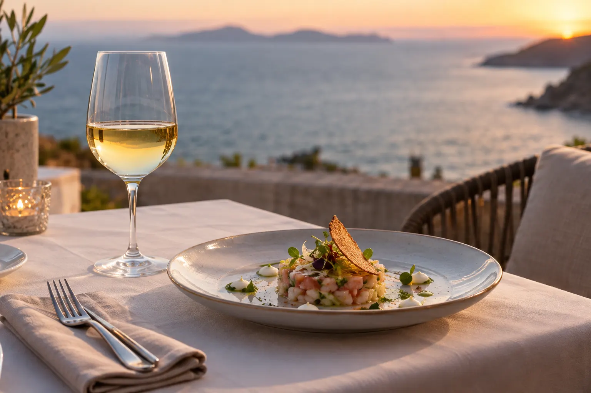
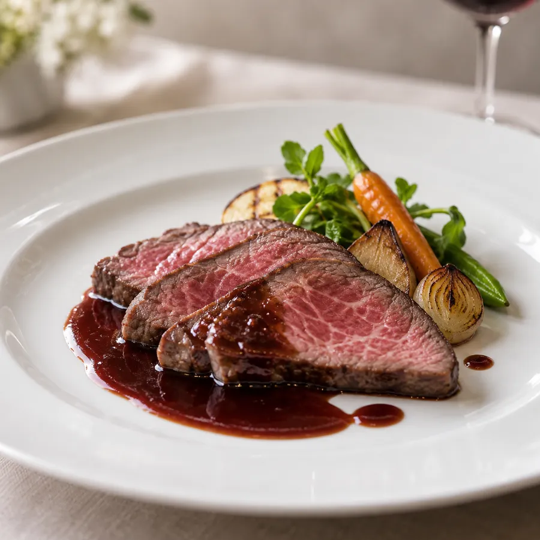
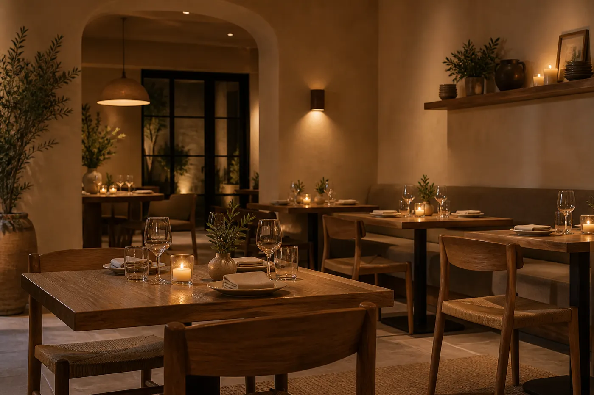
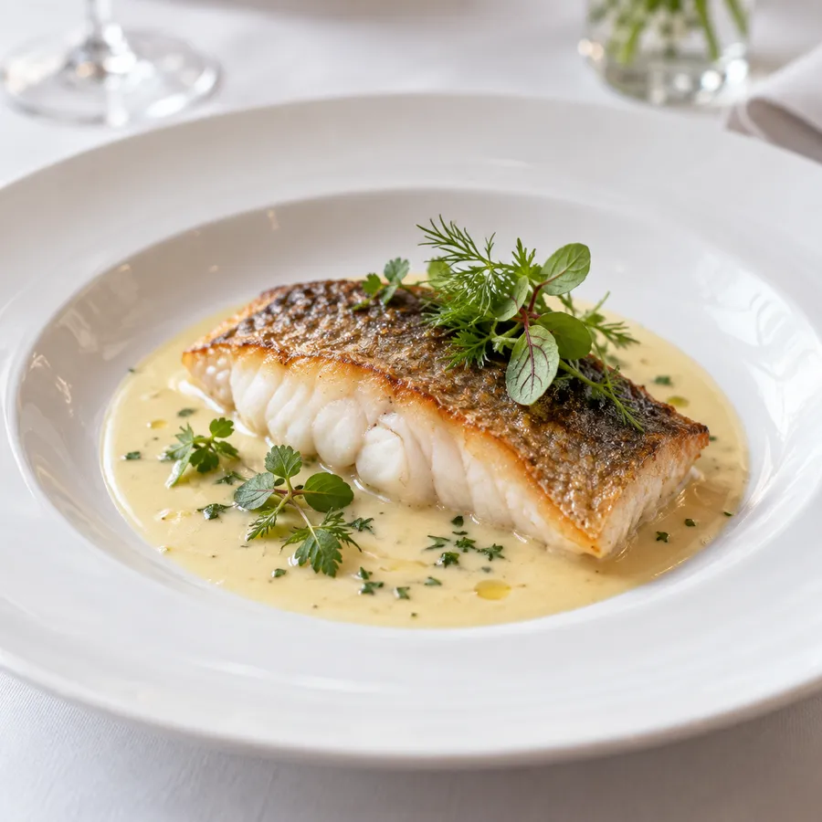

糸島の夕暮れに、ワインを一杯。
ご予約がおすすめ ・ 糸島の食材のビストロ
九州の黒毛和牛、玄界灘の魚、糸島の野菜。フランスの家庭料理の技法で仕立てる、夫婦ふたりのビストロです。
こだわり
パテ・ド・カンパーニュには糸島の豚を、ポワレには玄界灘の鯛を。フランスの定番料理を、糸島の食材でつくります。
ワインは自然派を中心に約60種類。料理に合わせて、グラスでもお選びいただけます。
シェフ・ソムリエ

お品書き
価格は税込・お一人様。
店内
カウンター6席とテーブル8席。夕方にはテラスから海が見えます。


ご案内
ご予約
ご予約がおすすめです。お電話・LINE・ネット予約で承ります。